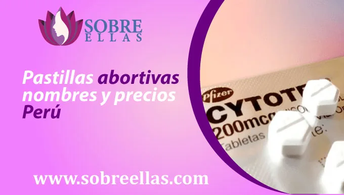
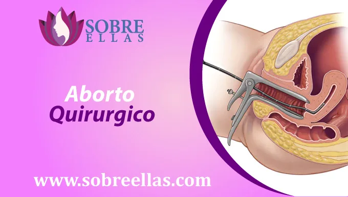

Pastillas abortivas precio Perú
-
addContenido
Las pastillas abortivas son una forma segura y efectiva de interrumpir un embarazo de forma no invasiva. En Perú, las pastillas abortivas están disponibles a un precio de aproximadamente de 350 soles por paquete. Este precio es alto en comparación con otros países en donde el aborto si es considerado legal, de todas formas sigue siendo una opción relativamente asequible. Las píldoras abortivas están disponibles en varias formas, incluyendo tabletas y cápsulas. Los comprimidos se toman por vía oral, y las cápsulas se insertan en la vagina de la mujer. La pastilla abortiva termina el embarazo haciendo que la mujer expulse al bebé. Las pastillas abortivas son una buena opción para las mujeres que desean interrumpir un embarazo de una manera segura y efectiva. También son una buena opción para las mujeres que no pueden permitirse el lujo de viajar a otro país para tener un aborto.
Pastillas abortivas nombres y precios Perú
Si estás buscando una opción más segura y económica para abortar en Perú, estás de suerte. Hay una variedad de opciones disponibles tanto en las farmacias, tiendas online o centros de salud con solo presentar tu receta médica, y los precios varían dependiendo de la marca y la dosis. La píldora abortiva más popular en Perú es el misoprostol, que está disponible en versiones genéricas y de marca. La versión genérica cuesta alrededor de s/25 soles por píldora, mientras que la versión de marca cuesta alrededor de s/35 o s/40 por píldora. Si está buscando una opción más cara, también puede buscar la píldora abortiva quirúrgica, Mifepristona. La mifepristona está disponible en versiones genéricas y de marca, y la versión de marca cuesta alrededor de s/55 por píldora. Ahora también, si buscas una opción menos costosa, también puedes buscar la píldora abortiva de venta libre, el misoprostol. Las pastillas de misoprostol de venta libre cuestan alrededor de s/20 por pastilla. Todo dependerá de qué pastilla escojas utilizar bajo supervisión o criterio médico. Sea cual sea tu elección, ten en cuenta que este proceso es menos riesgoso que cualquier otro que tiene carácter invasivo. Acude a un especialista de confianza para que te asesore de buena manera, sobre cual pastilla abortiva es la indicada para ti. Y te guíe durante todo el proceso explicando las ventajas y desventajas. En esta página también contamos con especialistas en el rubro, así que no dudes en ponerte en contacto con nuestros números, para despejar todas tus dudas.
Mifepristona precio peru
La mifepristona se usa como medicamento para interrumpir un embarazo temprano. Está disponible en muchos países diferentes, con precios que varían dependiendo de la farmacia y la dosis. En algunos países, la mifepristona se vende generalmente bajo el nombre de la marca Mifeprex. Estas pastillas abortivas con el nombre de mifepristona también están disponibles en Perú como una píldora o una inyección. La forma de píldoras generalmente se toma por vía oral, y la forma de inyección generalmente la administra un médico.
Misoprostol precio peru
El misoprostol está actualmente disponible en Perú en forma de pastilla abortiva por unidad o en caja de 12 pastillas. A un precio más bajo que el precio del misoprostol en otros países, pero sigue siendo alto en comparación con el precio de otros medicamentos en Perú. El precio del misoprostol ha ido en aumento, debido a la demanda de uso que este genera. Ya que cada vez se vuelve un medicamento más conocido que se usa para tratar las úlceras estomacales y abortos. También se utiliza para evitar que regresen las úlceras estomacales. El precio del misoprostol está influenciado por el coste de las materias primas y el coste de la mano de obra.
Cytotec precio peru
Cytotec es un medicamento seguro y eficaz que se utiliza para interrumpir un embarazo. Actualmente en Perú está disponible en varias formas de dosificación y se puede comprar sin receta en la mayoría de los países. Generalmente en las farmacias o centros de salud estas pastillas abortivas se encuentran disponibles como medicamentos recetados. Sus precios pueden variar dependiendo del país. En la mayoría de los países, el coste del cytotec es relativamente bajo.
Ventajas de las pastillas abortivas
Las pastillas abortivas son una forma segura y efectiva de interrumpir un embarazo. Están disponibles en varias formas y funcionan induciendo un aborto espontáneo. Uno de los principales beneficios de la píldora abortiva es que el proceso a llevar a cabo con ella, no es invasivo y se reducen los riesgos a infeccion o contagio, como en el caso del aborto quirurgico. Esto significa que las pastillas abortivas son una forma segura y efectiva de interrumpir un embarazo, independientemente del medio que se use para ingerirlas. Otro beneficio de las pastillas abortivas es que no existe una sola marca, sino varias en el mercado que hoy en día se han hecho conocidas por sus efectos positivos y precios, encontrarás desde la más baratas, hasta las de precio regular. Esto significa que puede elegir la pastilla abortiva que sea mejor para usted. Si deseas conocer un poco más a fondo sobre el uso de las pastillas abortivas, deberás ponerte en contacto con un especialista médico , para que te explique de pies a cabeza los pros y contras que contiene cada una de ellas, en sus distintas marcas y presentaciones. Hay algunos beneficios en el uso de píldoras abortivas, tanto a corto como a largo plazo. Estos son solo algunos de los beneficios más comunes:
Beneficios a corto plazo
Las píldoras abortivas pueden ser una forma efectiva y segura de terminar un embarazo. También son relativamente fáciles de usar, y se pueden hacer en el consultorio de un médico, clínica o hasta tienes la completa libertad de elegir el lugar donde deseas llevar a cabo la intervención abortiva por tu seguridad y tranquilidad.
Beneficios a largo plazo
Hay algunos beneficios a largo plazo para el uso de píldoras abortivas. En primer lugar, pueden ayudar a evitar tener un bebé si usted no quiere uno, porque no se encuentra preparada, porque no posee la posición adecuada, porque no te sientes preparada psicológicamente, porque tienes muchas metas trazadas por cumplir, etc. En segundo lugar, las pastillas abortivas son una forma segura y efectiva de terminar un embarazo si no está segura de poder manejar un bebé. Las pastillas abortivas también pueden ayudar a evitar riesgos potenciales para la salud durante y después del embarazo. Por ejemplo, las píldoras abortivas pueden ayudar a evitar complicaciones durante el parto, como el parto prematuro o el bajo peso al nacer. Entonces, ¿existen beneficios al usar pastillas abortivas? Realmente no hay una respuesta fácil a esa pregunta, porque dependerá de tu situación personal y preferencias.
Efectos secundario de las pastillas abortivas
Hay una serie de posibles efectos secundarios de las pastillas abortivas, todo dependerá del cuerpo o de la persona. Para algunas mujeres estos efectos secundarios son menores y pueden pasar desapercibidos, mientras que para otras pueden ser más graves y requieren atención médica. Entre los efectos secundarios menores de las pastillas abortivas se pueden incluir: dolor de cabeza, náuseas, vómitos, dolor en los senos. Estos efectos secundarios son generalmente leves y pueden desaparecer por sí solos después de tomar la píldora abortiva. Sin embargo, si persisten o se vuelven graves, debe visitar un médico para su evaluación. Otros posibles efectos secundarios de las pastillas abortivas incluyen: infertilidad, aborto espontáneo, sangrado severo. Estos efectos secundarios pueden ser más graves y pueden requerir atención médica. Si experimenta alguno de estos efectos secundarios después de tomar las pastillas abortivas, debe comunicarse con su médico de inmediato. Si está embarazada y está considerando un aborto, asegúrese de hablar con su médico sobre los posibles efectos secundarios de la píldora abortiva. Él o ella puede ayudar a decidir si los beneficios del aborto superan los riesgos.
Aborto

El aborto es un tema dificil y controvertido utilizado para muchos debates, sn llegar a un punto claro. Hay muchas opiniones diferentes sobre el tema, y ninguna posición es correcta. Cualquiera que sea su opinión sobre el aborto, hay algunos hechos que debe saber. El aborto es la terminación de un embarazo antes de que haya llegado a la etapa en que un bebé puede nacer. La decisión de tener un aborto es personal, y debe hacerse sólo después de un cuidado a consideración. Hay dos tipos principales de abortos: quirúrgicos y médicos.
Aborto medico
Los abortos medicos usan medicamentos para interrumpir el embarazo. Tal es el caso del uso del Cytotec, Misoprostol y Mifepristona, entre otros. El lugar donde se llevará a cabo la intervención, será determinado en la mayoría de los casos por el propio paciente (para su comodidad). Es considerado el medio menos riesgoso por la manera en cómo se realiza, no hay necesidad de hacer uso de ningún tipo de anestesia, no se realiza ningún tipo de corte o cirugía, la paciente no es obligada a asistir a una clínica clandestina, el proceso es breve y no requiere de tanto tiempo para la recuperación, etc.
Aborto Quirurgico
Los abortos quirúrgicos, también conocidos como abortos por eleccion, implican la extracción del bebé terminando con el embarazo en el útero. Hay muchas razones por las que una mujer puede decidir abortar. Algunas mujeres eligen abortar porque no quieren un bebé, otras porque no pueden pagar un bebé y otras porque creen que el bebé sería una carga para ellas o para su familia. El aborto es un procedimiento legal en la mayoría de los países. Sin embargo, hay algunas restricciones al respecto en algunos lugares. Por ejemplo, en algunos estados de los Estados Unidos, el aborto solo es legal si el embarazo es el resultado de una violación o si la vida de la mujer está en peligro. El aborto es una decision dificil y emocional. Si usted está considerando tener un aborto, es importante hablar con alguien al respecto. Hay muchos recursos disponibles para ayudar a tomar una decisión que sea adecuada para algunas mujeres que se les complica decidir en estas situaciones, pero principalmente el mayor consejo que se les puede dar, es que tomen en cuenta que esta decisión es individual y nadie tiene derecho a intervenir en ella. Si estás conforme con abortar, informate y hazlo, pero si por el contrario no deseas hacerlo, busca ayuda y asesoría para el cuidado de todo el proceso de gestación.
Aborto legal en peru
El aborto es legal en el Perú bajo ciertas circunstancias. El procedimiento se puede realizar si la vida o la salud de la mujer embarazada está en peligro, si el feto tiene problemas de salud graves o si el embarazo es el resultado de una violación o incesto. Sin embargo, el aborto no es legal en casos de embarazos causados por violación o incesto si la mujer no denuncia el delito a la policía. Perú es uno de los pocos países del mundo donde el aborto es legal en circunstancias limitadas. En el año 2016, el congreso de la republica encontró una medida que permite el aborto en casos de violación, incesto o un riesgo para la salud de la mujer embarazada. La ley está siendo revisada actualmente por la Corte Constitucional del Perú. Si se confirma, esto convertiría a Perú en el primer país de América Latina en legalizar el aborto en estas condiciones. A pesar de la disponibilidad legal del aborto, el aborto sigue siendo un tema controvertido en Perú. Muchas personas creen que el aborto no debería ser legal en ninguna circunstancia, mientras que otras creen que debería estar disponible en casos de violación o incesto. También hay una gran división cultural sobre el tema. Algunas personas en Perú creen que el aborto es un secreto sucio y vergonzoso, mientras que otras creen que debe ser abierto y discutido abiertamente. Cualquiera que sea su opinión sobre el aborto, es importante recordar que es un tema complejo y sensible. Si estás considerando abortar, es importante que puedas hablar con un amigo o familiar de confianza sobre tu decisión. También puede buscar información de profesionales de la salud o de recursos en línea. el aborto sigue siendo un tema controvertido en Perú. Sobre todo por los tipos de abortos como opciones que se tienen actualmente y las que llevan apareciendo, dentro de las cuales algunas de ellas exponen mas la vida de las mujeres y otras no tanto.
Como eliminar restos de un aborto incompleto naturalmente
Si eres como la mayoría de las personas, probablemente no estés interesada en pensar en el aborto. Pero si ha tenido un aborto incompleto, es posible que se pregunte qué hacer con los restos. En esta pagina te describiremos cómo eliminar los restos de un aborto incompleto de forma natural, paso a paso. Si recientemente ha tenido un aborto y los restos del aborto todavía están presentes, hay algunas cosas que pueden hacer para eliminarlos de forma segura y natural. Si se encuentra dentro de las 48 horas posteriores al aborto, puede intentar inducir el parto tomando analgésicos de venta libre y bebiendo una gran cantidad de líquidos. Si el parto no ocurre dentro de las 48 horas, puede ir a un hospital. Si tiene más de 48 horas después del aborto, debe tratar de inducir el parto tomando analgésicos de venta libre y bebiendo una gran cantidad de líquidos. Si el parto no ocurre dentro de las 48 horas, puede ir a un hospital. Si se encuentra dentro de las 72 horas posteriores al aborto, puede intentar inducir el parto tomando analgésicos de venta libre y bebiendo una gran cantidad de líquidos. Si el parto no ocurre dentro de las 72 horas, puede ir a un hospital. Si tiene más de 72 horas después del aborto, debe tratar de inducir el parto tomando analgésicos de venta libre y bebiendo una gran cantidad de líquidos. Si el parto no ocurre dentro de las 72 horas, puede ir a un hospital. Si la inducción del parto no funciona, puede ir a un hospital.
¿Cómo dar en adopción a un bebe en peru?
Si diste a luz, pero no estabas preparada en traer al mundo a una criatura, pero no tuviste el tiempo suficiente o los recursos para abortar, aun no es tarde o no lo veas como un martirio. Existen distintas maneras de dejar de ser madre luego de dar a luz, puedes dar en adopción al pequeño recién nacido. Si ya tomaste la decisión y estás interesada en dar en adopción a un bebé recién nacido en Perú, aquí hay algunos consejos para utilizar a comenzar: Primero, averigüe todo lo que pueda sobre el proceso de adopción en Perú. Hay varias agencias que pueden ayudar a encontrar un bebé que sea el adecuado para su familia, y cada una tiene su propio proceso y requisitos. Una vez que tenga una buena comprensión del proceso, asegúrese de investigar los lugares más seguros para dejar a tu pequeño y que este sea dado en adopción. Hay varias agencias que trabajan con bebés recién nacidos, y cada una tiene un proceso de selección diferente. Una vez que hayamos encontrado el lugar adecuado donde dejarás a tu pequeño, será el momento donde realizarás los trámites correspondientes para entregar al pequeño con todos los registros que la ley de Perú demanda y permitirás que una familia que busca al bebé con todas las condiciones necesarias, pueda hacerse cargo de él.
¿Para qué sirve la pastilla ergotrate?
La pastilla o píldora ergotrate es el nuevo tratamiento para la casos de obesidad que utiliza una combinación de estimulación eléctrica y medicamentos para ayudar al cuerpo a quemar más calorías. La pastilla ergotrate se toma una vez al día y hace la sensación de una corriente eléctrica a través del cuerpo para ayudar al cuerpo a quemar más calorías. Esta sensación ayuda a disminuir el apetito y mejorar el metabolismo.